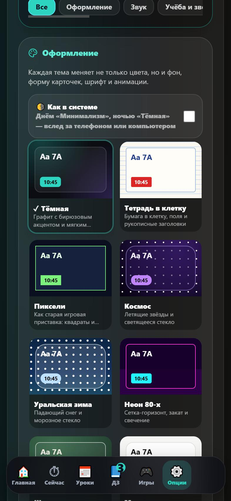

МОУ АСОШ №2 · с. Аргаяш
АСОШ Таймер
Вся школа в телефоне: звонки, расписание, домашка, замены и объявления учителей

Решение
Одно приложение вместо десятка чатов
- ⏱Таймер до звонкаВидно, какой урок идёт и сколько осталось.
- 🆓Бесплатно и без рекламыНикаких подписок и платных функций.
- 📱Android, iPhone, компьютерПо ссылке в браузере или как приложение.
- 📶Работает без интернетаРасписание, таймер и ДЗ — даже без связи.

Оформление
24 темы —
не только цвет
Меняются фон, карточки, шрифт и анимации. Или тема сама подстраивается под телефон.



Попробуйте
Наведите камеру на QR-код
- Откройте сайтКамерой телефона по QR-коду.
- Скачайте APK или откройте в браузереAPK — для Android, браузер — для iPhone и компьютера.
- Введите имя и код классаИли войдите гостем.
kafeevbogdan347-ui.github.io/asosh-timer-site

Сайт и APK
Спасибо! Вопросы?
АСОШ Таймер — бесплатно для всех учеников и учителей
Сайт и APK